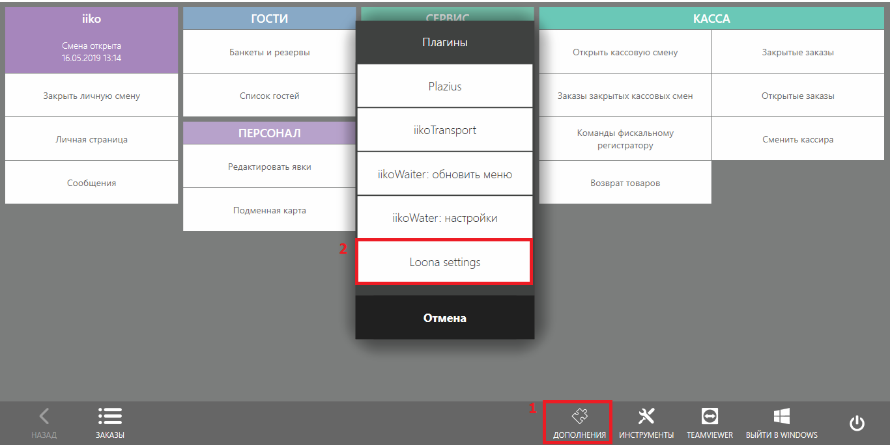
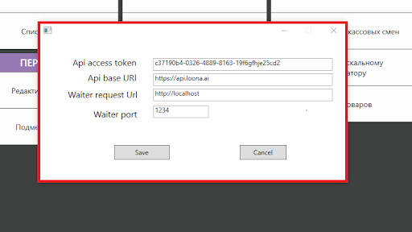
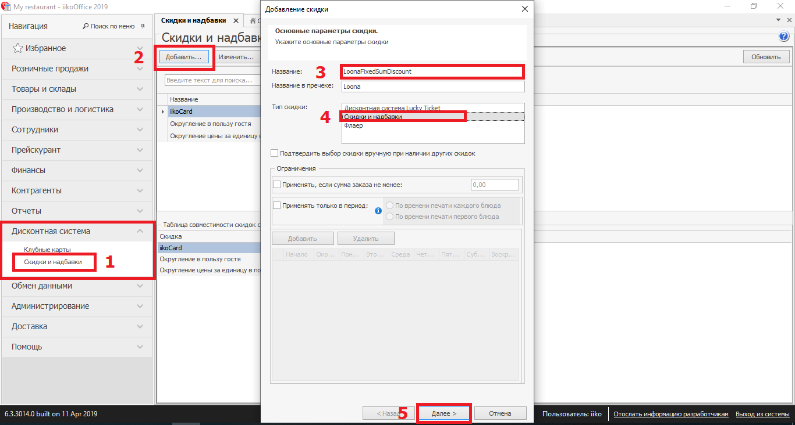
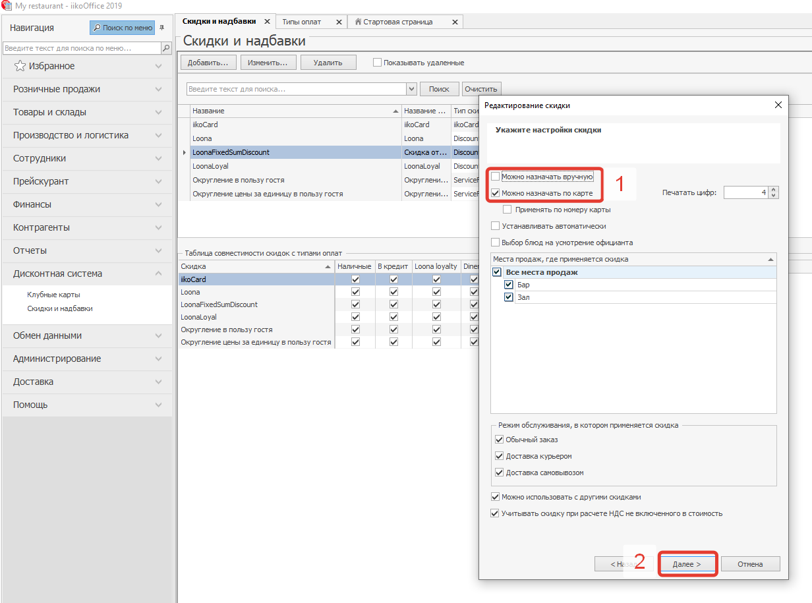
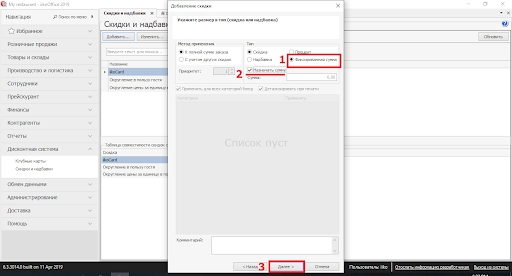
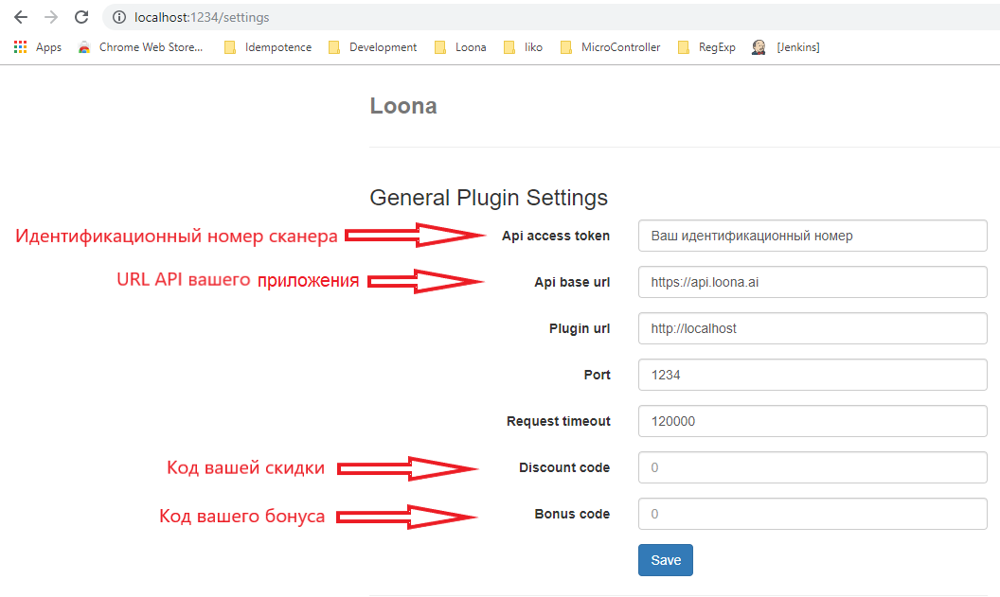

iiko
Установка плагина
Копируем папку LoonaPluginSettings в C:\Users\YourUserName\ProgramData
Копируем папки LoonaPlugin и iikoWaiter5 в директорию iikoFront/Plugins (в нашем случае C:\Program Files\iiko\iikoRMS\Front.Net\Plugins)
Запускаем iiko Front (помним что для данного метода нужна лицензии типа iikoTableService, iikoWaiter, iikoFrontPaymentPlugin)
В iiko Front переходим в раздел “Дополнения” и выбираем “Loona settings”
Введите Логин и Пароль

Задаем настройки:
- Api access token - по запросу
- Api base url - https://api.loona.ai
- Waiter request url - http://localhost
- Waiter port - 1234
- Api access token - по запросу

- Открываем iiko Office
- Переходим в раздел Дисконтная Система -> Скидки и Надбавки
- Добавляем скидку
- Обязательно пишем название - LoonaFixedSumDiscount
- Тип скидки ставим Скидки и Надбавки
- Нажимаем Далее

- Убираем галочку Можно назначить вручную, остальное по усмотрению ресторана

- Тип ставим “Фиксированная сумма” и обязательно устанавливаем галочку “Назначать сумму”

Нажимаем Далее и заканчиваем установку скидки.
Добавляем внешний вид оплаты. Переходим в раздел “Розничные продажи” нажимаем на “Тип платы” и добавляем новую оплату.
Обязательно указываем:
- Наименование - LoonaPayment
- Тип - Внешний тип оплаты
- Название в чеке - пишите что хотите
- Безналичный тип - Loona Payment
- Наименование - LoonaPayment
Сохраняем

Устанавливаем мобильное приложение iikoWaiter5
Перезагружаем iiko front
Настройки в приложении
Редактирование макета
Для использования скидок и бонусов в системе iiko штрихкод на карте должен содержать Номер Карты. Для настройки штрихкода на Номер Карты:
Перейдите в раздел Макеты
Зайдите в
 редактирование того макета на который хотите настроить сканер
редактирование того макета на который хотите настроить сканер

Перейдите в секцию Дизайн
Нажмите на штрихкод, в настройках поля откроются настройки штрихкода
Поменяйте значение на Номер Карты
Для использования купона:
Обнаружить номер под которым продукта зарегистрирован в CRM системе
В значении штрихкода поменять значение на “своё значение”
Поменять своё значение на ${pid}/№Продукт, где “№Продукт” это номер под которым продукт зарегистрирован
Использовать карты Loona
Создание сканера для карты
Для использования системы iiko вам необходимо использовать создать сканер для получения идентификационного номера. Этот сканер будет необходим для пользования интегрированой системой с iiko․
Для создания нового сканера:

В разделе Сканер нажмите на Создать сканер.
Введите название нового сканера
Выберите тип сканера - "App".
Выберите макеты с картами которые предназначены для сканирования, или отметьте Получить полный доступ чтобы сканер работал со всеми вашими макетами.
Нажмите Создать
В списке созданных сканеров появится новый сканер со своим Идентификационным номером, этот номер используется при настройке плагина.
r_keeper
Установка плагина
*В течении использования плагина, нужно выключить Windows Firewall или открыть доступ для порта плагина (port 1234)
- Скачайте и откройте папку плагина Loona

- Скопируйте «Extdll.dll» и «Extdll.ini» в папку UCS/FARCARDS

Откройте файл «FARCARDS.INI» в текстовом редакторе
В поле DLL впишите «ExtDll.dll» и сохраните изменения

Запустите «Farcards.exe – install»
Откройте папку где содержится R-keeper и запустите R-keeper «Manager»

Откройте систему r_keeper и зайдите в неё
Пройдите в меню в раздел «Деньги» и откройте «Скидки и Наценки»

- Откроется окно управления скидок и наценок, наведите мышь на поле «All» и с помощью правой кнопки мышки создайте новый тип скидок

- Откроются «Свойства», в них введите Название своей скидки и поменяйте статус на Активный

- Пройдите в окно «Скидки/Нацинки» вашей новой скидки и создайте новую скидку (Нажмите правой кнопки мышки на свободое поле, из возникших опций выберите «Новая скидка»)

- Введите название вашей скидки, пока что не меняйте статус на активный

- Откройте детализацию вашей скидки двойным кликом на иконку

- Создайте новую детализацию (Нажмите правой кнопки мышки на свободое поле, из возникших опций выберите «Новая детализация»)

- Откройте поле настроек детализации, и поменяйте процент скидки на 100.00

- Сохраните изменения

- Пройдите обранто в «Свойства» вашей скидки и поменяйте статус на активный «Active»

Сохраните изменения, но еще не закрывайте окно «Скидки и Надбавки»
Откройте папку Loona R-keeper
Скопируйте папку Loona в папку где хратится r_keeper и FARCARDS

- Откройте скопированую папку Loona, и запустите из нее файл «ServiceInstaller.exe» как администратор

- Сервис будет установлен, после установки зайдите в Windows Services (Сервисы), найдите Loona r-keeper plugin и убедитесь что «Startup Type» стоит автоматичекий (Automatic)

Не закрывайте окно сервисов
Затем откройте ваш браузер
Введите адрес плагина в браузере, адрес: «localhost:1234/settings»
Откроется поле настроек плагина. Введите необходимые параметры для настройки скидки и сохраните параметры. Код вашей скидки вам доступен в свойствах скидки в r_keeper manager.
- Для получения Идентификационного номера сканера и URL API приложения обратитесь к документации приложения Loona. В случае если URL приложения это "https://app.loona.ai", то URL API приложения это: "https://api.loona.ai".
- При изменениях порта на «XXXX», адрес плагина меняется на localhost:XXXX/settings (но нет необходимости менять порт)


Сохраните изменения параметров плагина
Вернитесь в «Сервисы», выделите сервис Loona r-keeper plugin, обновите сервис (сервис должен выключится после обновления), затем запустите сервис

Настройки в приложении
Редактирование макета
Для использования скидок и бонусов в системе r_keeper штрихкод на карте должен содержать Номер Карты. Для настройки штрихкода на Номер Карты:
Перейдите в раздел Макеты
Зайдите в
редактирование того макета на который хотите настроить сканер

Перейдите в секцию Дизайн
Нажмите на штрихкод, в настройках поля откроются настройки штрихкода
Поменяйте тип штрихкода на QR
Поменяйте значение на Номер Карты
Создание сканера для карты
Для использования системы r_keeper вам необходимо использовать создать сканер для получения идентификационного номера. Этот сканер будет необходим для пользования интегрированой системой с iiko․
Для создания нового сканера:
В разделе Сканер нажмите на Создать сканер.
Введите название нового сканера
Выберите тип сканера - "App".
Выберите макеты с картами которые предназначены для сканирования, или отметьте Получить полный доступ чтобы сканер работал со всеми вашими макетами.
Нажмите Создать
В списке созданных сканеров появится новый сканер со своим Идентификационным номером, этот номер используется при настройке плагина.